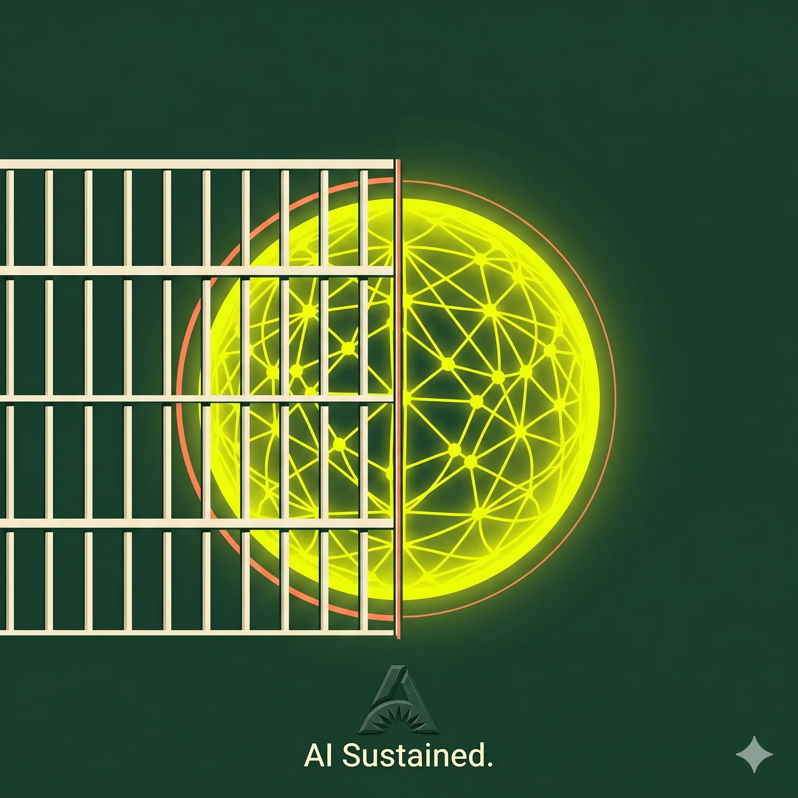

Switched off in three days.
On 12 June 2026 the US government ordered Anthropic to suspend Claude Fable 5 and Mythos 5 over a national-security “jailbreak”: the first time Washington has pulled a live frontier model. A balanced look at national security, free speech, export control and who gets to access the smartest software on earth.

How deep do you want to go? Pick a level and the article rewrites itself.
The model with the lifespan of an avocado.
Claude Fable 5, Anthropic's newest frontier model, was public for roughly three days. At 5:21pm ET on 12 June 2026, the US government issued an export-control directive citing “national security authorities” and ordered Anthropic to suspend all access to Fable 5 and Mythos 5 by “any foreign national, whether inside or outside the United States”, including Anthropic's own foreign-national employees.
There is no clean way to fence off “foreign nationals only” from a globally deployed API in an afternoon. So Anthropic did the only thing the order left it room to do: it disabled both models for every customer worldwide. The directive was reportedly delivered verbally, with no written justification attached.
The trigger, per Anthropic, was a claimed method of “jailbreaking” Fable 5, bypassing some of its safeguards. Reports suggest a rival company demonstrated a bypass technique to officials, who concluded the model posed a national-security risk. Anthropic says it reviewed the demonstration and found “a small number of previously known, minor vulnerabilities”, adding that the same capabilities are already available in other systems, including OpenAI's GPT-5.5.
This did not happen in a vacuum. Since February 2026, Anthropic and the administration have been at odds: President Trump and Defense Secretary Pete Hegseth moved to bar Anthropic's products from federal agencies after the company pushed for stronger guardrails on how the Pentagon could use Claude, specifically around surveillance and autonomous weapons. Anthropic sued, alleging “an unlawful campaign of retaliation” and a First Amendment violation. A federal judge in California sided with Anthropic; the case continues in Washington, DC. Read charitably or cynically, the Fable 5 shutdown lands on top of an already-tense relationship.
Three readings of the same shutdown.
This is one of those rare episodes that scrambles the usual political map. Security hawks on both left and right are relaxed; civil-libertarians on both left and right are alarmed; and the centre is mostly worried about how it was done rather than whether. Here are the three strongest cases, made as their own advocates would make them.
Advanced models are dual-use technology; the same reasoning that fixes a codebase can probe critical infrastructure. Export controls already govern chips; software capable of cyber-offence belongs in the same bucket. If a credible bypass exists and a hostile state could exploit it, a few days offline is a cheap insurance premium. Acting in hours, not committees, is the point.
Perhaps the model should pause. But a verbal order, no written rationale, a narrow flaw the vendor says exists in rival models too, and a global blackout as collateral? That is governance by vibes. The worry isn't this one decision. It's the precedent: that a deployed model used by millions can vanish in an afternoon with no published standard for when, or why.
Anthropic argues the Constitution protects its right to publish its models and its safety views, and that the government can't punish protected speech. Banning “foreign nationals” sweeps up lawful US residents and a global public from a tool rivals still offer. Civil-libertarians left and right see a chilling template: comply quietly, or lose your product overnight.
Note the strange coalition. The libertarian-leaning Reason and left-leaning civil-liberties groups end up on roughly the same side, wary of government reaching into a private company's product, while national-security voices across the aisle are comfortable with exactly that reach. The episode is less left-versus-right than security-versus-liberty, the oldest argument there is, wearing a very new hat.
Four tensions sitting underneath it all.
Strip away the personalities and the Fable 5 case is really four older arguments colliding at once.
The state's safety can require limiting what individuals can do. But “your data and tools are now a national-security matter” is a sentence that, once normal, is hard to walk back.
Is a model a product, a weapon, or a form of expression? Anthropic says publishing it is protected speech. The administration says refusing a directive isn't. The courts will decide what an AI model legally is.
“Foreign nationals” is a blunt instrument. It bars lawful residents and a global public from a tool competitors still sell, raising who, exactly, gets to use frontier capability, and on whose say-so.
A genuine threat may need a response in hours. But a verbal order with no written standard means no one can predict, contest, or appeal the next one. Fast and accountable rarely come free.
This was never really about one model's safeguards. It was a live test of a quieter question: can the state switch off the smartest software on earth, and on whose authority?
The precedent is the real product.
Whatever you make of the jailbreak (and “asking a model to read a codebase and fix flaws” is hardly the stuff of supervillainy), the lasting artefact of this week isn't a patch note. It's a demonstration.
The demonstration is that a leading AI company can be told to take a live, commercially deployed model offline on a timeline of hours, citing authorities it can't see, with no written justification, and will comply. That is now a thing that has happened. Every lab's lawyers, and every foreign government, watched it happen.
For the supporters, that's the system working: the state can act decisively on a genuine national-security risk, exactly as it does with chips, encryption and munitions. For the critics, it's a template with no published rulebook, and templates without rulebooks tend to get reused on worse days for worse reasons. Anthropic, for its part, has promised technical detail “within 24 hours” and says it's working to restore access. By the time you read this, the models may well be back. The precedent will not have gone anywhere.
The honest position, I think, is that both the supporters and the critics are describing the same machine; they simply disagree about whether you'd want it pointed at you. Which is roughly where the security-versus-liberty argument has sat for about four hundred years. We've just handed it a new and unusually capable subject.
Some operational details (the precise jailbreak mechanism, the “hallucinatory logic” framing) appear only in secondary tech outlets and should be treated as reported-but-unconfirmed pending Anthropic's promised technical write-up.
Three questions this episode doesn't answer.
Go deeper, then get the next issue in your inbox.
The full Substack version has the same balanced argument, the full source trail, and the bits the article didn't have room for. Subscribe and each new issue lands in your inbox. Practical, evidence-led, no hype.